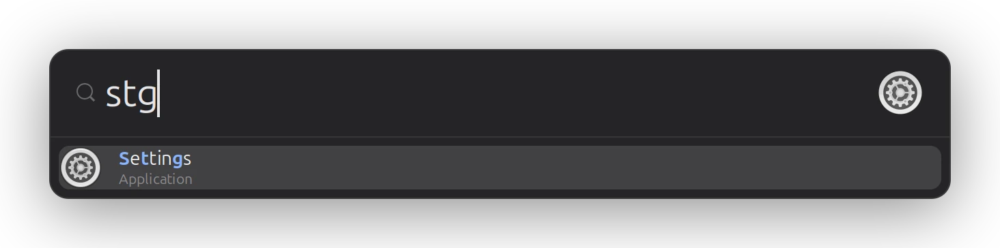
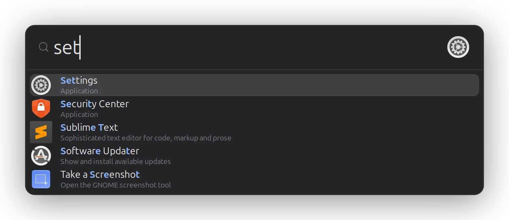
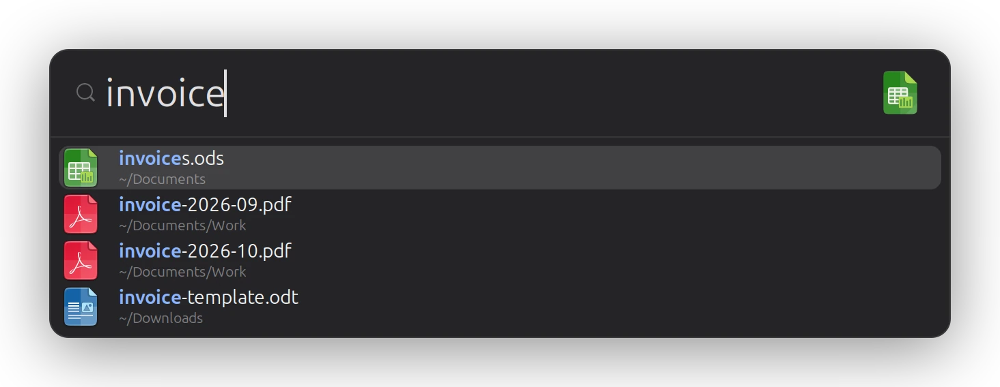
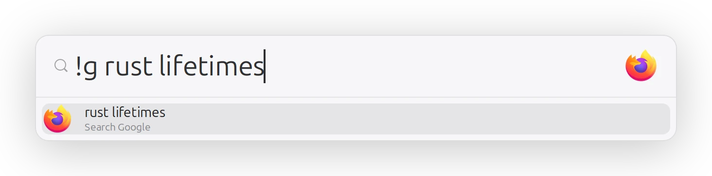
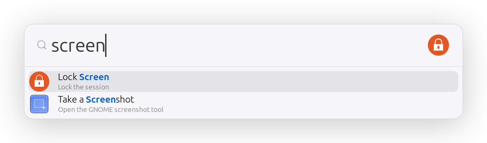
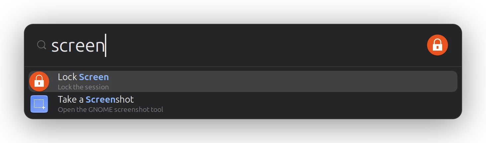

Apps first, matched loosely
stg finds Settings, and the matched letters show why. Apps you launch often drift to the top.


Free and open source • MIT
A small, fast Spotlight-style launcher for GNOME on Linux. Apps first, files second, web searches when you ask.


stg finds Settings, and the matched letters show why. Apps you launch often drift to the top.

Nothing matches an app? It looks through your home folder instead.


!bangs!g, !d, !w, !gh and more, before or after the query. Add your own in one plain text file. URLs open straight away.


Lock, screenshot, suspend, log out and power off - named in your desktop's language.


Switch GNOME between light and dark and glimbeam follows instantly - even while it's open. Icons come from your icon theme, names from your system language.
Ubuntu 22.04 or newer, and other GNOME desktops on X11 or Wayland.
wget https://github.com/michev/glimbeam/releases/latest/download/glimbeam_amd64.deb
sudo apt install ./glimbeam_amd64.debOn ARM, use glimbeam_arm64.deb.
git clone https://github.com/michev/glimbeam
cd glimbeam && ./install.shPrefer another shortcut? BINDING='<Super>space' ./install.sh
Then press Alt+Space.
Changed your mind? sudo apt remove glimbeam, or ./install.sh --uninstall.
Yes, on both Wayland and X11. Alt+Space is an ordinary GNOME custom shortcut, so GNOME itself catches the key in both sessions.
No, it needs GNOME. The shortcut is set through GNOME's settings and the system actions talk to GNOME Shell.
Activities search fills the screen and looks through apps, settings, files and more. glimbeam is a small popup: apps first, files only if no app matches, plus !bang searches and URLs. You can use both.
Those have extensions: Ulauncher also has a calculator, Albert takes Python plugins, Vicinae runs Raycast extensions. glimbeam has none of that, which is how it stays small and fast. If you need extensions, use one of those.
No. There is no background index: it walks your home folder only when no app matches, skipping hidden files and folders. Nothing goes over the network unless you pick a web search, which opens in your browser. The only thing it stores is how often you launch each app, in ~/.local/share/glimbeam/usage.
Change it in Settings → Keyboard → Custom Shortcuts, or run BINDING='<Super>space' glimbeam-setup. From source, pass the same BINDING to ./install.sh.
Yes. Engines are listed one per line in ~/.config/glimbeam/bangs.conf, as key URL [name]. Add or remove lines, then run systemctl --user restart glimbeam.
sudo apt remove glimbeam for the package, or ./install.sh --uninstall from source. Both remove the shortcut and give Alt+Space back to GNOME's window menu.